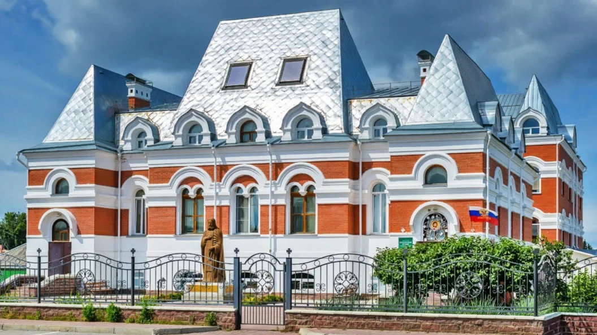

Гимназия
День рождения А.С. Пушкина в нашем летнем лагере
Сообщение об образовательной и приходской жизни гимназии. Читать публикацию на официальном сайте.

Бердск
На официальном сайте гимназии опубликованы сведения об обучении, контакты и новости школьной жизни.
Официальный сайт гимназии ↗50 детей · 10 педагогов · 3+ возраст детей
Занятия для детей и взрослых проходят при приходах. Выберите храм, чтобы узнать о занятиях и связаться с сотрудником.
Преображенский кафедральный собор
Приход в честь Сретения Господня
Приход в честь Богоявления Господня
Сообщение об образовательной и приходской жизни гимназии. Читать публикацию на официальном сайте.
Сообщение об образовательной и приходской жизни гимназии. Читать публикацию на официальном сайте.
Сообщение об образовательной и приходской жизни гимназии. Читать публикацию на официальном сайте.